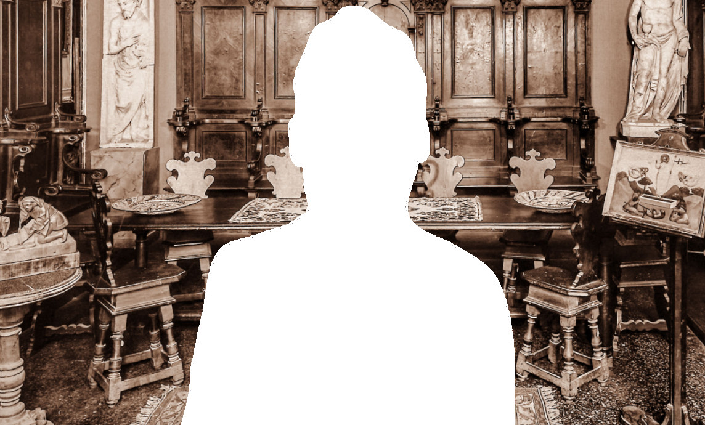

Freschi

Consulta le banche dati della Fondazione
Federico Zeri e ricerca fotografie, documenti,
cataloghi d'asta, fondi e notizie
sull'antiquario corrente.
Giuliano Freschi (1920-200) fu un antiquario attivo a Firenze nella seconda metà del Novecento.
Insieme a Giovanni Salocchi (1901-1984) fondò la “Galleria antiquaria Salocchi e Freschi” in via Borgo Ognissanti 58, dove lavorò anche Nicolò Salocchi (1927-1999), figlio di Giovanni.
Insieme parteciparono alle prime mostre antiquarie e Giuliano Freschi fu uno dei proponenti della Biennale dell’Antiquariato di Firenze.
Alla chiusura della galleria, nel 1963, Salocchi proseguì la sua attività tra Montecarlo e Firenze; Giuliano Freschi aprì invece un deposito in Via del Porcellana e successivamente, nel 1972, un negozio in via della Vigna Nuova 79r. Qui iniziò a lavorare anche il figlio di Giuliano, Roberto Freschi (1952- ).
La galleria rimase aperta fino al 1990.